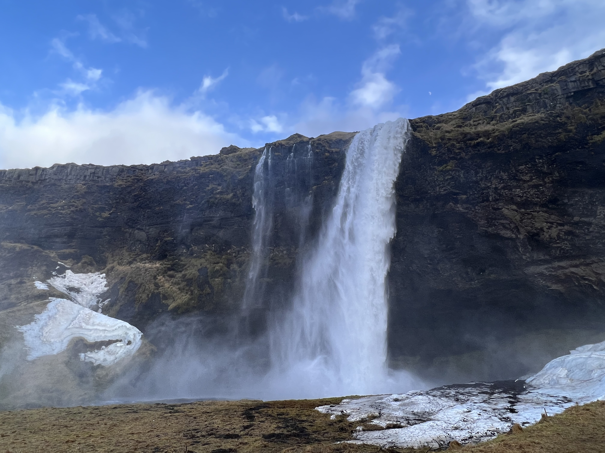

The Colosseum is an elliptical amphitheatre in the centre of the city of Rome, Italy, just east of the Roman Forum. It is the largest ancient amphitheatre.The 'Fontana di Trevi', or the Rome Trevi Fountain is perhaps the most famous fountain in the world and definitely in Italy and Rome.Its magnificent concrete dome is a lasting testimony to the genius of Roman architects.
Iceland
Geographical Location: Iceland
Iceland is a beautiful island country next to Europe. It is known for the extremely unique landscape, attracts millions of tourist from around the world every year
Iceland’s striking volcanic landscape sets it apart from nearly every other country on Earth. The Reynisfjara black sand beach is one of the islands iconic volcanic landscape.Lucy's picture taken in front of a very famous icelandic waterfall near SnaefellsjokullThe Icelandic horse is a breed of horse developed in Iceland. Although the horses are small, at times pony-sized, most registries for the Icelandic refer to it as a horse. Icelandic horses are long-lived and hardy.

Iceland has hundreds of waterfall due to its unique landscape, and this is one of them.
Big Ben is the nickname for the Great Bell of the Great Clock of Westminster, at the north end of the Palace of Westminster in London, England, and the name is frequently extended to refer also to the clock and the clock tower. The British Museum is a public museum dedicated to human history, art and culture located in the Bloomsbury area of London.The Natural History Museum in London is a museum that exhibits a vast range of specimens from various segments of natural history.The Victoria and Albert Museum in London is the world's largest museum of applied arts, decorative arts and design, housing a permanent collection of over 2.27 million objects.
Blausee is a lake in Bernese Oberland, Kandergrund, Switzerland. It is located near the Kander river. It is known for the beautiful blue water and delicious trout fish Tablerone is a swiss chcholate brand produced in Bern, switzerland. the mountain icon on the packaging is based in Zermatt: MatterhornZermatt, in southern Switzerland’s Valais canton, is a mountain resort renowned for skiing, climbing and hiking. The town, at an elevation of around 1,600m, lies below the iconic, pyramid-shaped Matterhorn peak. The picture is the horse that runs in the village The video of view on top of the highest mountain in Europe: JungFrau(Meaning:young lady)"